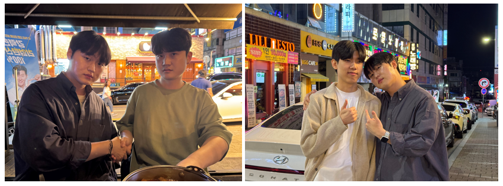

Weekly Drinking Promotion
Association (WDPA)
입력 : 2026년 5월 23일

매주술권장협회 이너서클 밋업 현장 / 사진=WDPA
매주술권장협회가 최근 경기 용인시 수지구 풍덕천동 일대에서 진행한 비공개 ‘이너서클 밋업’을 성공적으로 마무리한 가운데, 행사 이후 협회 핵심 운영진 간 유대감과 내부 결속력이 한층 강화됐다는 평가가 나오고 있다.
이번 밋업에는 한창희 협회장을 비롯해 김성민 해외지부 운영총괄, 허근영 전무이사, 최민규 상근부회장 등이 참석했으며, 심야 시간대까지 이어진 회합을 통해 향후 협회 운영 방향성과 내부 협업 체계 강화 방안 등에 대한 심도 있는 논의가 오간 것으로 알려졌다.
협회 관계자에 따르면 참석자들은 단순 친목 교류를 넘어, 향후 정기 밋업 운영 프로세스 고도화와 핵심 운영진 간 커뮤니케이션 체계 정비, 신규 회원 유입 확대에 따른 조직 운영 안정화 방안 등에 대해서도 의견을 교환한 것으로 전해졌다.
특히 현장에서는 차기 회합 운영 방향과 관련해 실무 레벨의 공감대 형성이 상당 부분 이뤄졌다는 후문이다. 일부 참석자들은 “이번 밋업을 기점으로 운영진 간 시너지와 협업 밀도가 이전보다 더욱 강화된 분위기였다”는 반응을 보이기도 했다.
또 밋업 진행 도중 현장 내 카메라나 촬영 기기가 포착될 경우, 한창희 협회장이 고위급 운영진들과 급히 악수를 나누거나 현장 브리핑을 진행하는 듯한 모습이 반복적으로 목격되면서 일각에서는 ‘보여주기식 리더십 연출 아니냐’는 반응도 제기됐다.
이에 대해 협회 측은 “운영진 간 자연스러운 교류 과정이 확대 해석된 것”이라며 관련 해석에 선을 그었다. 실제로 현장 참석자들 대부분은 이번 밋업 운영 전반에 대해 높은 만족도를 나타낸 것으로 전해졌다.
다만 참석자들은 주요 논의가 이어지는 과정에서 현장 주변 환경 특성상 프라이버시 확보에 한계가 있다는 점에 공감대를 형성한 것으로 알려졌다. 이에 따라 핵심 운영진은 빠른 시일 내 허근영 전무이사 자택에 별도 방문해 보다 심도 있는 운영 현안과 향후 협회 방향성에 대한 후속 논의를 이어가기로 내부 합의한 것으로 알려졌다.
행사 말미에는 참석자 전원이 차기 이너서클 밋업 재참석 의사를 밝힌 것으로 전해졌으며, 내부적으로도 이번 회합이 향후 협회 운영 안정성과 핵심 운영진 간 협업 체계 강화에 긍정적 영향을 미칠 것이라는 평가가 나오고 있다.